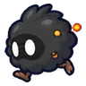

ทุ่งตอไม้ควันขาว
ดูบนแผนที่และวิธีไป วางแผนฟาร์ม
ชั้นล่างในที่ราบสูง · Lv 30–45
ชั้นล่าง / ดันเจี้ยน
มอนในแมพ (7)
| มอน | Lv | ธาตุ | โซน |
|---|---|---|---|
| 30–39 | วิญญาณ | ||
 ปุยเขม่าแตกตัว | 30–43 | ไฟ | ตอไม้ยักษ์ควันขาว |
| 32–45 | ไฟ | ตอไม้ยักษ์ควันขาว | |
| 32–45 | ไฟ | ||
| 32–45 | ดิน | ตอไม้ยักษ์ควันขาว | |
| 32–45 | ดิน | ||
| 47–47 | ไฟ |
อุปกรณ์ที่ดรอปในแมพนี้
| ของ | โอกาสสูงสุด |
|---|---|
| 0.5% | |
| 0.25% | |
| 0.25% | |
| 0.25% | |
| 0.25% | |
| 0.25% | |
| 0.24% | |
| 0.12% | |
| 0.12% | |
| 0.12% | |
| 0.12% | |
| 0.12% | |
| 0.12% | |
| 0.12% | |
| 0.12% |